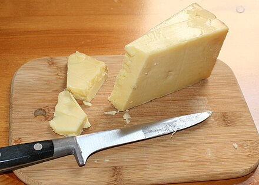

Cheddar Cheese
Cheddar cheese (or simply cheddar) is a natural cheese that is relatively hard, off-white (or orange if colourings such as annatto are added), and sometimes sharp-tasting. It originates from the English village of Cheddar in Somerset, South West England.[1]
